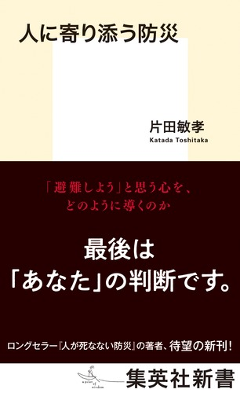

片田敏孝『人に寄り添う防災』
金沢大学 高大接続リーディングセミナー #22
![]()
Ⅰ. イントロダクション
はじめに
Noteお願い
- 受講生のあいだでの意見交換、話し合う場合は、できるだけビデオオンにして下さい
スケジュール
| 時間 | 内容 |
|---|---|
| 13:00〜13:20 | イントロダクション：スケジュールと自己紹介 |
| 13:20〜13:30 | リーディング・セミナーって何？：趣旨説明と目標 |
| 13:30〜14:15 | （45分）課題図書：著者情報と意見の共有 |
| 14:15〜14:30 | 休憩 |
| 14:30〜16:30 | （120分）紹介文の作成 |
| 16:30〜17:00 | 振り返りと案内 |
講師紹介：苅谷
専門：政治思想史
- 18世紀イギリスの議会政治：レトリック受容と新興メディア
- 聞き手を説得する技法の受容（キケロ；サルスティウス；タキトゥス）
- 偽装ディベートと議会政治の発展
担当講義
- ビブリオバトル入門：ブクログ
- RとQuartoではじめるデータサイエンス
災害と防災
自己紹介
- 名前、出身地、学年
- 本セミナーに参加した理由
- 好きな本、お勧めの本
- なければ、好きな科目など、好きなことなら何でも
Ⅱ. 趣旨説明と目標
趣旨説明
- 高校生向けに書かれた良書があるものの、高校生に読まれていない
- 大学での学びをイメージしてもらいたい
- ゼミでの輪読
- Cf. 研究者(大学教員)も輪読している
- 1冊の本、論文を全員で読み、内容を共有、評価する
- Cf. ビブリオバトルとの違い「競争ではない」
- Cf. 静かな流行「読書会」
- ゼミでの輪読
- 正解のない学びを体験して欲しい
- Cf. 現代国語
- 論文として紹介されているものもエッセイに近い
- 大学で求められるレポート、論文の形式を知る
趣旨説明 > 静かな流行「読書会」
向井和美『読書会という幸福』
わたし自身が高校生だったころのことを考えても、本を読んで感想を言えと迫られて、いったいどれほどのことが言えただろうか。本からなにかを読みとり、それを切り取ってきて言葉にできるかどうかは、ある程度、人生経験の長さに比例している。だから、中高生にとっての読書会はあくまで「お試し」であってかまわない。これから先、さまざまな経験をしたあと、またいつかどこかで読書会に参加してくれればそれでいい（向井 （2022））。
趣旨説明：入試問題 > 京都大学新聞
入試問題
- 京都大学新聞「解かずに読む共通テスト書評2026」
共通テスト「国語」や「公共、倫理」で出題される文章は、世相や世代にあったテーマを扱う文献から引用されることも多く、じっくり読むと意外に面白い。とはいえ問題を解く立場だと、問題文をのんびり読んでる場合ではないし、内容にちょっと興味を持ったとしても、試験後の忙しさにかまけて忘れてしまう受験生が少なくないだろう。
京大新聞では例年、共テ問題文の出典から数冊をピックアップし、その書評を掲載している。本面をきっかけに出題文を思い出し、受験後にでも読んでみようか、と思ってもらえれば幸いだ。（編集部）
趣旨説明：入試問題 > 京都大学新聞
国語
- 小松佳代子（教育学者）「『贈与』としての美術・ABR」
- 『美術教育の可能性』所収
- 遠藤周作「影に対して」
- 大片忠明『イワシ むれで いきる さかな』
公共、倫理
- 坂口安吾『堕落論』
趣旨説明：入試問題 > 京都大学新聞
「『贈与』としての美術・ABR」
著者は「交換」としての社会科学と「贈与」を対置するバタイユのポスト構造主義的な図式に立脚し、贈与的省察に基づく探究を、社会科学的研究の隙間を埋めるものとして位置づけるにとどめている。以下は評者の私見になるが、美術教育によって訓練される「わかりえない」ものをその多義性を維持したまま探究する態度は、こうした図式にとどまらず、たとえばショート・ナラティブの拡散や、それに伴う思考の分極化・先鋭化といった、さまざまな現代的事象に対置することも可能に思える。「わかりえない」ものを探究する枠組みとして、美術制作や美術教育の可能性に光をあてた好書である。（汐）
坂口安吾『堕落論』
公共，倫理第4問では、坂口安吾『堕落論』の一部が引用された。タイトルに「落」と付き、引用文中には「堕ちる」が4度も繰り返されるという、受験生の心を乱す問題。作問者の倫理観を疑いたくもなるが、著者の安吾が前々回の丙午生まれで今年生誕120年を迎えることを踏まえれば、なかなか粋な出題に見えてくる。（梅）
- Cf. 東進ハイスクール 解答・解説
- Cf. 京都大学新聞「解かずに読む共通テスト書評2024」
- Cf. 京都大学新聞「解かずに読む共通テスト書評2025」
趣旨説明:学問
- 大隅良典「細胞の謎を解く：科学「役立つ」だけで測れず」 (『読売新聞』2019年7月23日)
でもこれまでわからなかったことを知る喜び、知的好奇心こそが科学の原動力で す。……役に立つという言葉が独り歩きして、役に立つとは何かを考えず、2、3年で何か応用できて製品になる、というイメージが若者の間にも広がっているように思えます。
注目が集まる領域だけでなく、誰もがまだほとんど関心を示さないことに挑戦するのも、科学の進歩のためには必要です。それには色々なことに挑戦できるような広い裾野が何よりも大切なのです。
趣旨説明
- 情報×方法×問題意識あるいは知的好奇心
- 情報や方法は勉強である程度どうにかできるが・・・
紹介文（合作）の作成
- 受講生全員の意見をできるだけ反映しよう
- 共通点の発見
- 納得できる意見の発見
- 高校生(または同世代)に向けたものにしよう
紹介文は大学のウェブサイト（セミナー案内など）で紹介いたします
紹介文：石沢武彰『手術はすごい』（1/2）
みなさん、手術というのは、スーパースターのような偉大な人がやっていると考えていませんか？実は意外と手先の器用さより、どんなことが起きても対処できるようにする思考回路の方が重要なのです。確かに、ある程度のトレーニングが必要にはなりますが、どのタイミングで手術を行うのか、どこを切るかなどの思考回路を育てていくのが大切です。
一般的に外科医師に求められる能力は、技術や器用さだと思われていますが、本書によれば、外科医に求められるのは、知識をもとにした直感的な判断力とともに、治療全体を見通したうえで、手術をどう行うかという戦略的な思考力です。そのため、考える力のほうが外科医師に必要な力だといいます。
本書は、著者が「戦略・戦術」、「武器」、「技術」などの観点から、手術における魅力や重要性、外科医として必要になる能力について語っています。
紹介文：石沢武彰『手術はすごい』（2/2）
医学界での化学技術は日々進化していますが、手術は外科医自らの技術や判断力、体力などを結集させた総合力で行われます。そして、手術の経過においては全体を見通し、安全な手術を行うための外科医の思考過程が最も重要であると著者は述べています。
本書では、「現代の技術が、洗練された医療機器と治療戦略、修練を積んだ外科医の技能、そして患者さんの治癒力で成り立っている」という点を重要な視座として据えながら、これらの要素が相互に補完し合い、手術という医療行為が成立していく過程を体系的に提示しています。
多少専門的な表現も出てきますが、外科医としての視点を現代の技術について一般の人にも伝わるように丁寧に解説しているために、医学部を目指している学生だけでなく、手術のアフターケアに関わる医療関係者はもちろん、これから消化器外科での手術を受ける患者にも読んでほしい一冊です（753文字）。
- この他の紹介文はこちら
Ⅲ. 課題図書
著者情報 > 今回の課題図書
- 片田敏孝（2020）『人に寄り添う防災』（集英社新書）
出版社の案内
本書は、被災地でのフィールドワークや、内閣府「中央防災会議」での議論などを紹介しながら、高齢者・要支援者の避難誘導、行政に頼らない防災コミュニティの構築、非常時において情報提供者が実践すべきコミュニケーションの要諦など、具体例に基づいた「命を守るための指針」を提言する。（出版社の案内）。

著者情報
- 著者：片田敏孝
- 専攻：災害社会工学
- 所属：東京大学大学院情報学環総合防災情報研究センター
- 公式サイト
- パーソナル：片田研究室
- 大学：東京大学大学院情報学環総合防災情報研究センター
- 社会活動
- 「津波避難、「二人称」の防災教育を 釜石で教えた片田さんに聞く」（『朝日新聞 電子版』2026年3月5日）
- 【荒ぶる災害に向かい合うこれからの防災を考える】片田 敏孝_第140回（2025年春季）東京大学公開講座「災害」（via YouTube）
著者情報
大人向けに講話をする時も同じです。お年寄りには「皆さんが逃げないと、お孫さんも逃げなくなってしまいますよ」と話すのが一番効果的なんです。
言葉を知っているだけではだめで、事前に家族でしっかり話し合わなければ、実現は難しいです。
- 「津波避難、「二人称」の防災教育を 釜石で教えた片田さんに聞く」（『朝日新聞 電子版』2026年3月5日）
意見の共有
- 別紙「事前課題一覧リスト」に沿って進めます
- 著者がもっとも主張したい事柄
- あなたが重要だと考えた箇所
- 著者の主張のうち、理解できなかった点、納得できない点、よくわからなかった点
- この本の感想
Ⅳ. 紹介文の作成
紹介文の内容
- 字数:400-800
- 書いて欲しいこと
- どんな人に読んで欲しいか(向いているか)
- 著者の主たる意図
- 読みどころはどこか
- 内容の要約
- +α(メッセージなど)
全員で一つの紹介文を作成します（一人ずつ紹介文案を作るのではありません）
Tipまとめ方
- 順序はこの通りでなくてかまいません
- 内容に応じて、適宜、組み替えましょう
まとめ方の参考
「理科の先生のメガネ」書評 ふとした日常に働く科学的思考
〔冒頭の段落〕タイトルのネーミングが良い。内容は周囲に満ち溢（あふ）れる不思議や疑問に「気付く」「観（み）る」「考える」という章立てで進み、自分の答えを「試行する」こと、周囲へ「表現する」ことはいつ何時でも可能だと教えてくれる。各項目も短く、著者が勧めるように日めくりカレンダーのように読み進めるのもいい（リンク）。
紹介文のポイント（1/3）
⑴ 主語
- 著者（片田）の主張と､解釈者（セミナー参加者）の主張を書き分ける
- 主語を明示的に書く
- 著者：著者は､松本（敬称不要）は､本書は
- 解釈者：文脈上、自明の場合は、私たち､私たち高校生は､主語は明示しなくてもよい
- 読み手が迷う可能性があれば、明示しましょう
例：行政学者の水口は､「何でも説明できるものは何も説明していないのと同じことである」と述べ､森の定義の曖昧さを批判する。
紹介文のポイント（2/3）
⑵ 引用
- 直接引用
- 特に重要なところを抜き出す
- 「」（一重括弧で囲む・アカデミックな決まり｡論文、レポートではページ数の記載が必要だが、今回は不要）
- 間接引用
- ポイントを自分の言葉で言い直すこと（同上）
紹介文のポイント（3/3）
⑶ 読みどころ（解釈）の提示
- 著者の考えではなく、セミナー参加者の考え、意見を示す
⑷ 紹介文（レポート）に相応しい動詞､形容詞の選択
- × 思う（特に思うの多用は厳禁）/ すごい
- ○ だろう / 優れた
グループワーク
- 紹介文
- 何を書くか
- 役割分担
- 提出先：Zoomのチャット機能を使って提出して下さい
Ⅴ. 振り返りと案内
振り返り
- 今日、一番印象に残ったことは何ですか？
- 思いがけない言葉との出会いはありましたか？それは、あなたの考えをどのように変えましたか？
- 今日の体験を通して、「もっと調べてみたい」と思ったことは何ですか？
高大接続プログラム「大学での学び」レポート
- このプログラムは金沢大学KUGS高大接続プログラム（大学での学び）の対象です
- KUGS高大接続プログラム（の修了）
- ➡ 「KUGS特別入試」の出願資格要件
- 締め切り：2026年10月11日(日) 23:59（厳守）
- 特別入試に興味がある方は公式サイトをご覧下さい
Important重要
- レポート評価の返却に最大で約1ヶ月半かかります。レポート提出期限は1か月以内ですが、早く提出した方が早く返却されます（現在、3年生を優先して評価しているので、返却は遅れる可能性があります）
高大接続プログラム「大学での学び」レポート
課題内容
- 題名:「あなたが受講した個別プログラム名」
-
本文:
- 第1段落：「受講した個別プログラムの要約」
- 第2段落：「受講して気づいた課題(問題)」
- 第3段落：「その課題(問題)を解決するために必要と思われる方策」について，あなた自身の考えを根拠に基づき具体的に記してください
- 最終段落：「以上で書いてきたことを踏まえて、「高校卒業後に学びたいことや取り組みたいこと」を記述してください」
- 解決策が長くなる場合は複数に分けても構いません
高大接続プログラム「大学での学び」レポート
ポイント
- 要約はこのセミナーに参加していない者が読んでもわかるように書きましょう
- 感想文にならないように注意しましょう
- 受講して気付いた課題を明確に書けるかどうかが鍵です
- 課題は内容にかかわる社会的な事柄（自分の事柄ではない）にしましょう
高大接続プログラム「大学での学び」レポート
高大接続プログラム フローチャート

参加証

- セミナー終了後、個別にメールでお送りします
- 金沢大学に限らず、大学の出願書類として利用して下さい
- 主体性評価の判断材料となる可能性があります
セミナー後アンケート
- 提出先：Google Forms
- 締め切り：9月16日（水）23時59分
アンケートURLは、参加証を添付するためのメールにも記載します
参考文献
参考文献
片田 敏孝（2020）．人に寄り添う防災 集英社
向井 和美（2022）．読書会という幸福 岩波書店